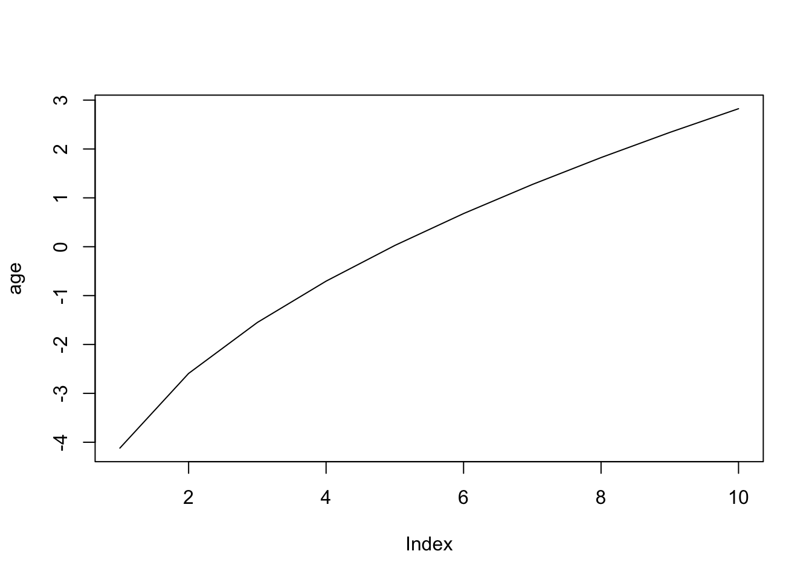
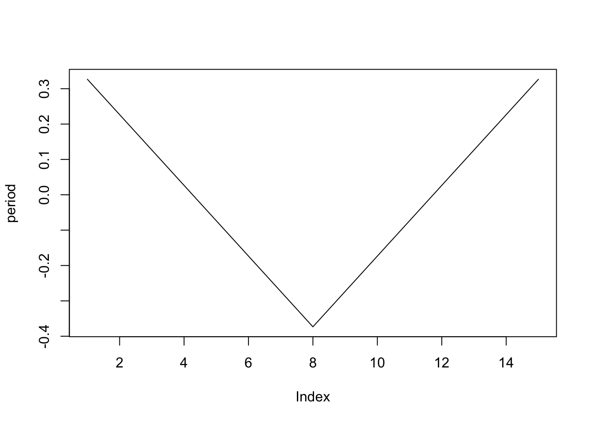
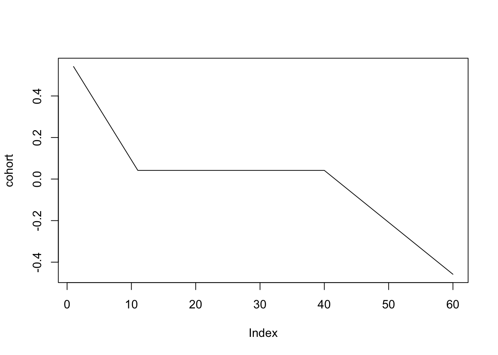
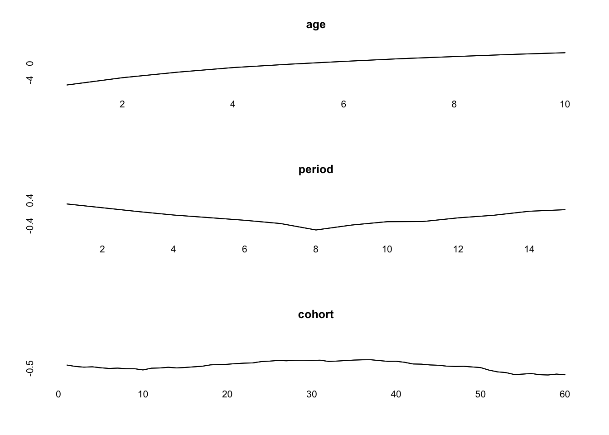

Simulating Age-Period-Cohort Data
Volker Schmid
16th November 2017
age=2*sqrt(seq(1,20,length=10))
age<- age-mean(age)
plot(age, type="l")
period=15:1
period[8:15]<-8:15
period<-period/10
period<-period-mean(period)
plot(period, type="l")
periods_per_agegroup=5
number_of_cohorts <- periods_per_agegroup*(10-1)+15
cohort<-rep(0,60)
cohort[1:10]<-10:1
cohort[41:60]<- -(1:20)/2
cohort<-cohort/20
cohort<-cohort-mean(cohort)
plot(cohort, type="l")
simdata<-apc_simulate(-10, age, period, cohort, periods_per_agegroup, 1e6)
print(simdata$cases)## [,1] [,2] [,3] [,4] [,5] [,6] [,7] [,8] [,9] [,10]
## [1,] 1 5 13 30 67 140 238 398 922 1839
## [2,] 0 1 14 34 73 113 197 377 754 1471
## [3,] 2 6 8 27 40 103 192 334 654 1328
## [4,] 1 4 17 25 55 90 161 309 522 1159
## [5,] 0 1 14 15 44 83 145 274 478 937
## [6,] 1 2 7 21 36 81 137 254 435 881
## [7,] 0 4 8 16 40 74 119 252 366 733
## [8,] 0 0 4 13 31 71 118 259 363 619
## [9,] 0 0 5 20 45 73 131 227 340 644
## [10,] 0 2 7 18 53 82 128 255 383 703
## [11,] 1 3 10 24 49 81 136 294 451 725
## [12,] 0 4 6 21 54 104 169 325 497 799
## [13,] 0 4 7 30 52 93 220 349 572 897
## [14,] 1 1 7 31 59 109 229 372 613 990
## [15,] 1 2 13 29 57 139 214 397 692 1140simmod <- bamp(cases = simdata$cases, population = simdata$population, age = "rw1",
period = "rw1", cohort = "rw1", periods_per_agegroup =periods_per_agegroup)
simmod<-effects(simmod, save=TRUE)print(simmod)##
## Model:
## age (rw1) - period (rw1) - cohort (rw1) model
## Deviance: 139.81
## pD: 37.77
## DIC: 177.58
##
##
## Hyper parameters: 5% 50% 95%
## age 0.679 1.560 3.095
## period 50.940 99.837 173.464
## cohort 327.788 631.253 1165.707check(simmod)## [1] TRUEplot(simmod, quantiles=0.5)
effects<-effects(simmod)
par(mfrow=c(3,1))
plot(age, type="l")
lines(effects$age, col="blue")
plot(period, type="l")
lines(effects$period, col="blue")
plot(cohort, type="l")
lines(effects$cohort, col="blue")